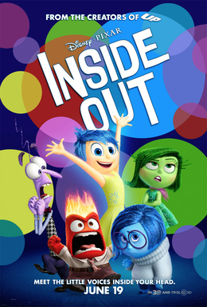

The 20-1 Animation Film Festival
Film Categories
Comedy
Big Hero 6
_poster.jpg)
Big Hero 6 is a 2014 American 3D computer-animated superhero science fiction action film produced by Walt Disney Animation Studios and released by Walt Disney Pictures—the first superhero film in Walt Disney Animated Classic series and the 54th overall. The film is inspired by the Marvel Comics superhero team of the same name. Directed by Don Hall and Chris Williams, the film tells the story of a young robotics prodigy named Hiro Hamada who forms a superhero team to combat a masked villain. The film features the voices of Ryan Potter, Scott Adsit, Daniel Henney, T. J. Miller, Jamie Chung, Damon Wayans, Jr., Génesis Rodríguez, Alan Tudyk, James Cromwell, and Maya Rudolph.
Director: Don Hall & Chris Williams
Inside out
Inside Out is a 2015 American 3D computer-animated comedy-drama adventure film produced by Pixar Animation Studios and released by Walt Disney Pictures. The film was directed and co-written by Pete Docter, co-directed and co-written by Ronnie del Carmen and produced by Jonas Rivera, with music composed by Michael Giacchino. The film is set in the mind of a young girl named Riley Andersen (Kaitlyn Dias), where five personified emotions—Joy (Amy Poehler), Sadness (Phyllis Smith), Fear (Bill Hader), Anger (Lewis Black), and Disgust (Mindy Kaling)—try to lead her through life as her parents (Diane Lane and Kyle MacLachlan) move the family from Minnesota to San Francisco and she has to adjust to her new life.
Director: Pete Docter & Ronnie del Carmen
UP
.jpg)
Up is a 2009 American 3D computer-animated comedy adventure[3] film produced by Pixar and released by Walt Disney Pictures. Directed by Pete Docter, the film centers on an elderly widower named Carl Fredricksen (Ed Asner) and an earnest young Wilderness Explorer named Russell (Jordan Nagai). By tying thousands of balloons to his home, 78-year-old Carl sets out to fulfill his dream to see the wilds of South America and to complete a promise made to his late wife, Ellie. The film was co-directed by Bob Peterson, with music composed by Michael Giacchino.
Director: Pete Docter & Bob Peterson
Wallace and Gromit: a Matter of Loaf and Death

A Matter of Loaf and Death is a 2008 British clay animated murder mystery comedy film created by Nick Park, and the fourth of his shorts and the last to date to star his characters Wallace and Gromit. Released in 2008, it is the first Wallace and Gromit project since the feature film The Curse of the Were-Rabbit in 2005, and the first short since A Close Shave in 1995.
Director: Nick Park